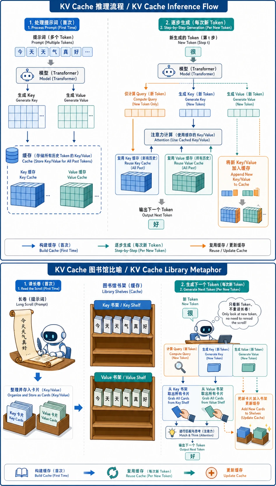

KV Cache 与推理优化
前置知识：05 GPT系列深度解析
自回归推理为什么慢
自回归推理为什么慢？
大语言模型（如 GPT）在生成文本时采用自回归（Autoregressive）方式：每次只生成一个 token，然后把这个 token 加入输入，再生成下一个。
输入: "今天天气"
第1步: "今天天气" → "真"
第2步: "今天天气真" → "好"
第3步: "今天天气真好" → "啊"
...问题在于：每生成一个 token，模型都要对之前所有 token 做一次完整的注意力计算。如果你的序列有 1000 个 token，生成第 1001 个 token 时，模型需要重新计算所有 1000 个 token 的 K 和 V 向量——尽管这 1000 个向量和上一步完全相同。
这就像每次续写一篇论文时，都要从第一个字重新读一遍。显然，人类不会这样做——我们会记住之前读过的内容。KV Cache 就是让模型也"记住"之前计算过的内容。

真正的瓶颈：内存带宽，而非算力
一个反直觉的事实：大模型推理的瓶颈通常不是 GPU 算力不够，而是显存带宽不够。
NVIDIA A100 (80GB):
- 计算能力: 312 TFLOPS (FP16)
- 显存带宽: 2.0 TB/s
- 算术强度分界线: 312T / 2T = 156 FLOP/byte
自回归生成单个 token:
- 需要加载: 整个模型权重（如 7B × 2 bytes = 14GB）
- 计算量: 约 14 GFLOP（每个参数约 2 FLOP）
- 算术强度: 14G / 14G = ~1 FLOP/byte
1 FLOP/byte << 156 FLOP/byte → 严重的内存带宽受限（Memory-bound）换句话说：GPU 在 decode 阶段 90%+ 的时间在等待数据从显存搬到计算单元，而不是在"算"。这解释了为什么量化（减少模型大小）和批处理（提高计算密度）是推理优化的两大核心方向。
本章核心优化全景
自回归推理的慢
│
┌──────────────┼──────────────┐
│ │ │
重复计算 K/V 请求间等待 一次只出一个token
│ │ │
KV Cache Continuous 推测解码
PagedAttention Batching (Speculative
Decoding)KV Cache 与推理优化技术
1. KV Cache — 缓存不变的 Key 和 Value
注意力机制回顾
Transformer 的自注意力计算：
其中 $Q = XW_Q$, $K = XW_K$, $V = XW_V$，$X$ 是输入序列的隐藏状态。
核心观察
在自回归生成时，对于已经生成的 token，它们的 K 和 V 向量在后续步骤中永远不会变化（因为 Decoder 使用 Causal Mask，每个位置只能看到自己和之前的位置）。
步骤 t: 输入 = [x1, x2, ..., xt]
K = [k1, k2, ..., kt] # 需要所有位置的 K
V = [v1, v2, ..., vt] # 需要所有位置的 V
Q = [qt] # 只需要新位置的 Q
步骤 t+1: 输入 = [x1, x2, ..., xt, x_{t+1}]
K = [k1, k2, ..., kt, k_{t+1}] # k1~kt 和上一步完全相同!
V = [v1, v2, ..., vt, v_{t+1}] # v1~vt 和上一步完全相同!
Q = [q_{t+1}] # 只需要新位置的 QKV Cache 的做法：把每一步计算的 K 和 V 向量缓存起来，下一步只需要计算新 token 的 $k_{t+1}$ 和 $v_{t+1}$，然后拼接到缓存中。
计算量对比
| 方式 | 每步计算量 | 总计算量 (生成 T 个 token) |
|---|---|---|
| 无 KV Cache | $O(t \cdot d^2)$（全序列） | $O(T^2 \cdot d^2)$ |
| 有 KV Cache | $O(d^2)$（只算新 token） | $O(T \cdot d^2)$ |
从 $O(T^2)$ 降到 $O(T)$，这就是 KV Cache 的威力。
KV Cache 的显存占用
对于一个标准 Transformer：
以 LLaMA-2 7B 为例（32 层、32 头、$d_{head}$=128、FP16）：
每个 token 的 KV Cache = 2 × 32 × 32 × 128 × 2 bytes = 512 KB
序列长度 2048 = 2048 × 512 KB = 1 GB
序列长度 4096 = 4096 × 512 KB = 2 GB
批大小 32 × 序列 4096 = 64 GB ← 比模型权重(14GB)还大!关键结论：随着序列长度和批大小增长，KV Cache 的显存占用会快速膨胀，甚至超过模型权重本身。这就是 PagedAttention 要解决的问题。
Prefill 与 Decode 两个阶段
关键认知：Prefill（处理整个 prompt）是计算密集型（Compute-bound），Decode（逐 token 生成）是内存带宽密集型（Memory-bound），两个阶段的性能瓶颈完全不同。这意味着优化策略也完全不同：Prefill 需要更强的算力（如 Flash Attention 减少计算冗余），Decode 需要更高的内存带宽或更小的模型体积（如量化、更大 batch）。理解这个区别是理解所有推理优化的基础。
自回归推理分为两个截然不同的阶段：
| 阶段 | Prefill（预填充） | Decode（解码） |
|---|---|---|
| 做什么 | 一次性处理整个 prompt | 逐个生成新 token |
| 计算特征 | 大矩阵乘法，计算密集 | 小向量乘大矩阵，内存密集 |
| 瓶颈 | 通常是算力（Compute-bound） | 几乎总是内存带宽（Memory-bound） |
| KV Cache | 一次性填充所有 prompt 的 KV | 每步追加一个 KV |
| GPU 利用率 | 高（大块计算） | 低（大量时间在搬数据） |
这两个阶段的性能特征完全不同，后面会看到推理框架如何分别优化它们。
2. PagedAttention — 像操作系统管理内存一样管理 KV Cache
朴素 KV Cache 的浪费
在朴素实现中，每个请求预分配的 KV Cache 空间 = 最大可能序列长度。但实际输出长度是不可预知的：
请求 A: 预分配 2048 token 的 KV Cache 空间
实际只用了 200 → 浪费 90%+
请求 B: 预分配 2048 token 的 KV Cache 空间
实际用了 1500 → 浪费 25%研究表明，朴素 KV Cache 管理的显存浪费率通常超过 60%（Kwon et al., 2023）。
PagedAttention 的灵感
PagedAttention（Kwon et al., 2023，vLLM 的核心）直接借鉴了操作系统的虚拟内存和分页思想：
| 操作系统概念 | PagedAttention 对应 |
|---|---|
| 虚拟内存页 | KV Block（固定大小的 KV Cache 块，如 16 tokens） |
| 页表 | Block Table（记录逻辑块到物理块的映射） |
| 按需分页 | 只在需要时分配新的 KV Block |
| 内存碎片整理 | 物理块不需要连续，通过映射表寻址 |
朴素方式（连续分配）:
请求A: [████████░░░░░░░░] 请求B: [██████░░░░░░░░░░]
↑ 浪费 ↑ 浪费
PagedAttention（分页分配）:
Block Pool: [A1][B1][A2][B2][A3][B3][空][空]
请求A 的 Block Table: A1 → A2 → A3 (按需增长)
请求B 的 Block Table: B1 → B2 → B3
→ 几乎没有内部碎片核心优势：
- 几乎零浪费：只分配实际使用的块，内部碎片仅最后一个块
- 更大的批大小：同样的显存可以服务更多并发请求
- 共享前缀：多个请求共享相同 prompt 时，可以共享 KV Cache 块（Copy-on-Write）
- 实测 vLLM 比 HuggingFace 推理吞吐量提升 2~24 倍
3. Continuous Batching — 动态批处理
传统静态批处理的问题
时间线: ═══════════════════════════════════════════>
请求 A: [████████████████████████] (生成 200 tokens)
请求 B: [████████████] (生成 100 tokens)
请求 C: [████████████████] (生成 150 tokens)
静态批处理: 三个请求同时开始，但 B 在 100 步后就完成了
→ B 完成后，它的 GPU 槽位闲置，直到 A 完成才能接新请求
→ GPU 利用率低，尾部延迟高Continuous Batching 的解决方案
时间线: ═══════════════════════════════════════════>
请求 A: [████████████████████████]
请求 B: [████████████]
请求 C: [████████████████]
请求 D: [████████████████████] ← B完成后立即加入
请求 E: [████████████] ← C完成后立即加入
→ 每一步（iteration-level）检查哪些请求完成，立即替换为新请求
→ GPU 始终满载，吞吐量大幅提升Continuous Batching（也叫 Iteration-level Scheduling）在每个 decode step 检查批中的请求状态：
- 完成的请求立即移出，释放资源
- 新到达的请求立即加入
- 批大小动态变化，始终保持 GPU 高利用率
实测效果：相比静态批处理，吞吐量提升 2~5 倍。
4. 推测解码（Speculative Decoding）
动机
自回归解码最根本的限制是串行的：必须先生成 token $t$，才能生成 token $t+1$。
但很多时候，接下来几个 token 是高度可预测的。比如生成 "The capital of France is"，接下来几乎一定是 " Paris"。能不能让一个小模型先"猜"几步，然后用大模型一次性验证？
核心思路（Leviathan et al., 2023; Chen et al., 2023）
传统自回归（大模型 M_p，每步一个 token）:
Step 1: M_p("The") → "capital"
Step 2: M_p("The capital") → "of"
Step 3: M_p("The capital of") → "France"
Step 4: M_p("The capital of France") → "is"
Step 5: M_p("The capital of France is") → "Paris"
→ 5 次大模型前向传播
推测解码（大模型 M_p + 小模型 M_q）:
猜测阶段: M_q 连续猜 γ=4 个候选 token: ["capital", "of", "France", "is"]
→ 4 次小模型前向传播（很快）
验证阶段: M_p 一次前向传播，并行检查这 4 个 token
→ 1 次大模型前向传播
→ 全部接受 → 相当于 1 步完成 4+ 个 token!数学保证——采样一致性
推测解码最精妙的地方是：生成结果的分布与单独使用大模型完全相同，没有任何质量损失。
验证规则——对于每个候选 token $x$：
其中 $p(x)$ 是大模型的概率，$q(x)$ 是小模型的概率。
- 如果 $p(x) \geq q(x)$：一定接受（大模型也同意小模型的选择）
- 如果 $p(x) < q(x)$：以 $p(x)/q(x)$ 的概率接受
如果被拒绝，则从修正分布中重新采样：
这个拒绝采样方案在数学上保证了最终输出等价于从 $p(x)$ 中采样。
加速效果
| 场景 | 典型加速比 | 说明 |
|---|---|---|
| 代码生成 | 2~3x | 代码模式性强，小模型猜中率高 |
| 对话 | 1.5~2x | 中等可预测性 |
| 创意写作 | 1.2~1.5x | 不可预测性高，猜中率低 |
关键参数：
- 猜测长度 $\gamma$：通常 4~8，太短加速不明显，太长浪费小模型计算
- 小模型选择：同系列的小版本（如 LLaMA-7B 猜、LLaMA-70B 验）效果最好
- 接受率：猜中率越高加速越大，通常 60~80%
5. 其他推理优化技术简述
| 技术 | 核心思路 | 效果 |
|---|---|---|
| Flash Attention | 利用 GPU 内存层次（SRAM vs HBM），减少数据搬运 | 训练+推理均有效，内存节省 5~20x |
| GQA (Grouped Query Attention) | 多个 Q 头共享一组 K/V 头 | 减少 KV Cache 大小，LLaMA-2 70B 使用 |
| MQA (Multi-Query Attention) | 所有 Q 头共享同 1 组 K/V | 极致压缩 KV Cache，但精度可能下降 |
| Prefix Caching | 缓存公共系统 prompt 的 KV Cache | 相同系统 prompt 的请求直接复用 |
| Chunked Prefill | 将长 prompt 的 prefill 分块执行 | 避免长 prompt 阻塞 decode 请求 |